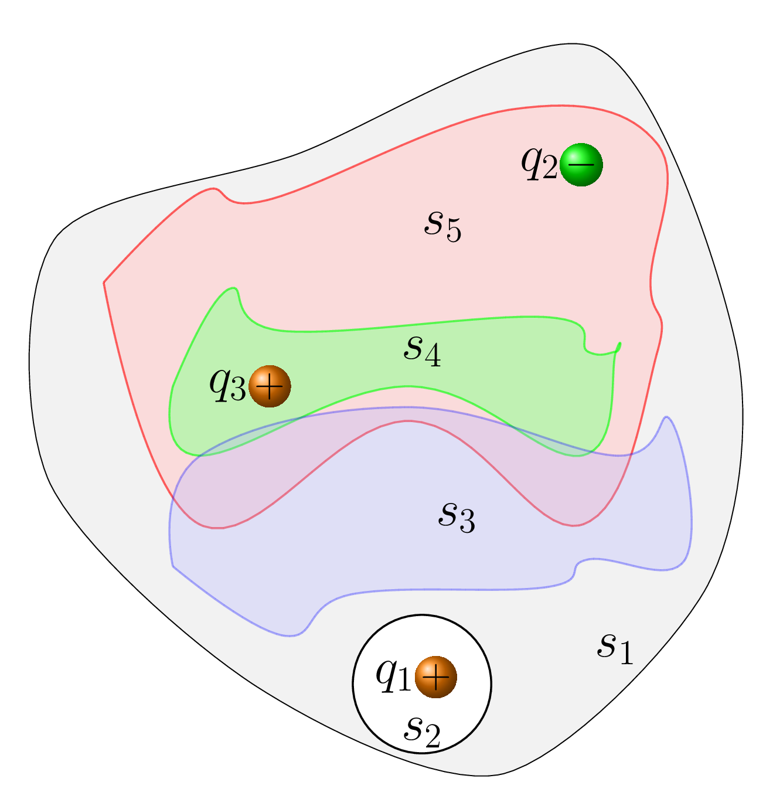
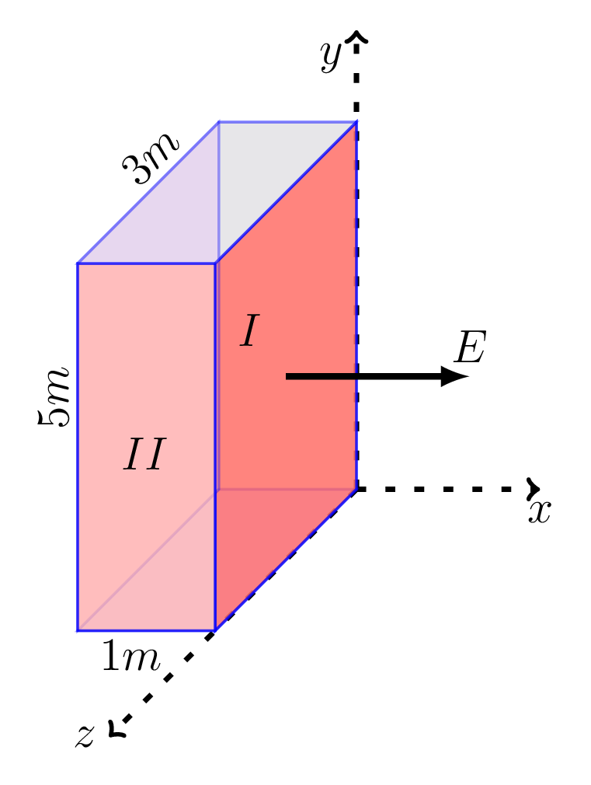
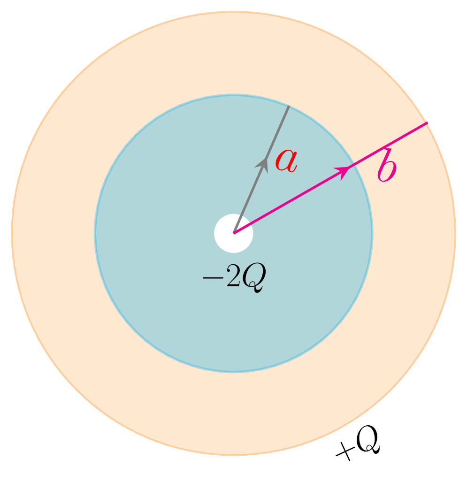

Calculate total positive charge and total negative charge on 5 g of nickel. Given: atomic mass and atomic number of Nickel are 58.69 amu and 28 amu, respectively.
2.
Write the process to determine the sign of a charged object using electroscope if the electroscope is positively charged initially?
3.
Three electrical charges are arranged along the x-axis. The first charge is \(q_{1} = +10 \,\mu C \) located at \(x_{1}= 1\, m\text{;}\) the second charge is \(q_{2} = -20 \,\mu C\) located at \(x_{2} = 2\, m\text{;}\) and the third charge is \(q_{3} = 30 \,\mu C\) located at a point where it experiences no electrical force.
Where is the third charge located?
What is the electrical force on each of the other two charges?
What is the total electrical force on the system of three charges? Could this arrangement of charges be used to propel a spaceship through space? Why?
4.
Two electrical charges are arranged along the x-axis. The first charge is \(q_{1} = +100 e\) located at \(x_{1} = -1 \,mm;\) the second charge is \(q_{2} = -200 e\) located at \(x_{2} = 2 \,mm.\) If an electron is released from rest at the origin, what will be the magnitude and direction of its initial acceleration?
5.
Two point charges are located on the positive x-axis of a coordinate system. Charge \(q_{1} = 1.00 \,nC\) is located at \(x_{1} = 2.00 \,cm\) and charge \(q_{2} =3.00 \,nC\) is located at \(x_{2} = 4.00 \,cm\text{.}\) What is the total force exerted by these two charges on a third charge \(q_{3} = 5.00 \,nC\) located at the origin? Neglect gravitational force.
6.
If all the electrons in one gram of hydrogen were placed at the south pole of the earth and all the protons at the north pole, what would be the electrical force between them? Express your answer in Newtons, then convert the answer to pounds. (The atomic mass of hydrogen is 1.00794, the radius of the earth is \(6.38 \times 10^{6} \,m,\) and 1 N = 0.2248 lb.)
7.
Two small copper spheres, each having a mass of 50 g, are separated by 2.00 m.
How many electrons does each sphere contain? (The atomic mass of copper is 63.5 g/mole, and its atomic number is 29.)
How many electrons would have to be removed from one sphere and added to the other to cause an attractive force between the spheres of magnitude \(1.00\times 10^{4}\, N \text{?}\)
What fraction of all the electrons in each sphere does this represent?
8.
Two point charges are located on the y-axis as follows: charge \(q_{1} = +3.00 \,\mu C\) at y = 50 cm, and charge \(q_{2}= -2.00 \,\mu C\) at y = 0. What is the total force, magnitude, and direction exerted by these two charges on a third charge \(q_{3} = 5 \,\mu C\) located at \(y = -40 \,cm\text{?}\)
9.
Four electrical charges are located at the corners of a square. The first charge is \(+10 \,\mu C \) at (0,0), the second is \(-20 \,\mu C\) at (1m,0), the third is \(+30 \,\mu C\) at (1 m, 1 m), and the fourth is \(-40 \,\mu C\) at (0, 1 m).
What is the magnitude and direction of the electrical force on the \(10 \,\mu C\) charge?
If gravity acts in the -y-direction and the first charge has a mass of 100 g, what is the magnitude and direction of the initial acceleration of the first mass if released from rest and allowed to move under the influence of gravitational and electrical forces.
10.
Three equal charges of \(+10 \,nC \) are located at the corners of an equilateral triangle whose sides are 10 cm long. What is the magnitude of the force experienced by each charge due to the others?
11.
A positive charge q is placed on the +y axis at y = a, and a negative charge -q is placed at y = -a. A point charge Q is located along the x-axis.
What is the magnitude and direction of the net electrical force on charge Q?
What does this become for x = 0?
Graph the x-component of this force \(F_{x}\) versus x for \(-4a \lt x \lt 4a.\)
Graph the y-component of this force \(F_{y}\) versus x for the same interval.
Use your graph to estimate when the magnitude of F becomes a maximum. Approximately what is that maximum and for what value of x does it occur?
12.
A rod of length 2a is symmetrically located on the y-axis as shown in the figure below. It has a total positive charge of Q. A point charge q is located along the x-axis at a distance x.
Use calculus to find the force (magnitude and direction) on q due to Q.
What does this force become when \(x \lt \lt a?\)
When \(x \gt \gt a?\)
What is the magnitude of F when Q = 10 nC, q = 2 nC, and x = a = 10 cm?
13.
A thin but large flat sheet of material has a uniform charge Q per unit area A on its surface equal to \(\sigma= Q/A.\) Use calculus to find the force on a charge q located at a distance x from that surface. Hint.
Set up a coordinate system with the x-axis perpendicular to the charged surface and use polar coordinates \((r,\theta)\) to specify the location of an arbitrary charge element dq inside the surface. Use the results of Example 2 to express the element of electric field dF at x due to a ring of charge dq as
Then express \(\,dq\) in terms of a and \(\,da\) and integrate over a to obtain the final result.
Electric Field.
14.
A thin disk of radius R and uniform surface charge density (charge per unit area) s is centered on the origin in the y, z plane.
Use calculus to find the electric field at an arbitrary point along the x-axis.
What is the electric field when \(x \lt \lt R?\)
When \(x \gt \gt R?\)
15.
Draw approximate electric field lines for the charge distribution shown at right.
16.
The figure below shows an electric dipole located in an electric field directed to the right. The magnitude of the charge on each particle of the dipole is 2 nC, the distance between the particles is 10 cm, the angle \(\theta = 60^{o},\) and the magnitude of the electric field is 50 N/C.
What is the dipole moment of the dipole?
What is the torque on the dipole?
What is the potential energy of the dipole?
17.
What is the electric field at point P due to the charges in the diagram at right if the length of the edges of the square is a = 0.1 m?
18.
A point charge \(q_{1} = +5 \,\mu C\) is located at the point (2 m, 1 m), and a second point charge \(q_{2} = -3 \,\mu C\) is located at the point (-2 m, -2 m). What are
the magnitude and
the direction of the electric field at the origin?
What would be the force on a third charge \(q_{3} = 1 \,\mu C\) if it were placed at the origin?
19.
A uniform electric field of 1000 N/C is directed downward. An electron moving horizontally to the right enters the field with a speed of \(v_{o} = 1.00 \times 10^{6} \,m/s.\)
How long does it take for the electron to move 2 cm across the field?
How far will it move vertically during this time interval?
What direction will it be traveling at the end of that time interval?
20.
Find the electric field at the center of a square in a figure given aside, if \(q=1\times 10^{-8}\,C\) and a = 5.0 cm.
21.
A ring of charge \(Q\) and radius \(a\) lies in the y, z -plane and is centered on the origin.
Use calculus to show that the electric field at any point along the x-axis is given by
What does this become when \(x \gt \gt a\text{?}\)
When \(x \lt \lt a?\)
22.
A ring of charge \(Q\) and radius \(a\) lies in the y, z -plane and is centered on the origin. Its electric field at any point along the x-axis is given by
\begin{equation*}
E =k\frac{Qx}{(x^{2}+a^{2})^{3/2}}\hat{i}
\end{equation*}
Use calculus to show that the electric field at a distance \(x\) perpendicular to the center of a uniformly charged disk of radius \(R\)is
is directed through a cube whose sides are of length 20 cm along the x, y, and z - axes. What is the electric flux through each of its faces?
30.
The electric flux through a surface in the x, y - plane is \(-100 \,N.m^{2}/C.\) If the electric field is \(100\, N/C\) and in the direction \(\hat{i} - \hat{j} + 2\hat{k},\)
what is the area of the surface?
What is the direction of the normal to the surface?
where \(a = 10 \,Nm/C \) and \(b = 20 \,Nm/C.\) What is the electric flux through a surface whose corners are at (0,0,0), (0,1m,0), (0,1m,2), and (0,0,2m)?
Gauss’s Law.
32.
The electrical field within a continuous distribution of charge is given by the equation
where \(c = 1\,N/C.m\) is a constant, (x,y,z) are Cartesian coordinates, and (i,j,k) are the Cartesian unit vectors.
Write the equation for \(\vec{E}\) in terms of the position vector \(\vec{r}\text{.}\) What kind of symmetry is associated with this function?
What is the electric flux through a spherical surface of radius 1 m centered at the origin of the coordinates? How much electrical charge is located inside this sphere?
What is the electric flux through a cube 1 m on a side centered at the origin of the coordinates? How much electrical charge is located inside this cube?
33.
Prove that the electric field at a distance r from a point charge q as derived from Coulomb’s law is the same as that derived from Gauss’s law.
34.
Three charged objects carry the charges \(q_{1} = 10 \,nC,\quad q_{2} = -20 \,nC,\) and \(q_{3} = 40 \,nC\text{,}\) respectively and are located as shown in the figure below. What is the net electrical flux through each of the surfaces?

35.
Use Gauss’s Law to calculate the electric field outside a single, isolated, large, flat sheet of charge whose surface charge density is \(\sigma\text{.}\) Suppose two such charged sheets are placed side by side, parallel to one another.
What is the electric field between the two sheets?
What is the electric field outside the two sheets?
How does this result compare to that of a single, isolated, large conducting plate with a charge per unit area \(\sigma \) on its surface?
36.
A long straight coaxial cable consists of an inner conducting cylinder of radius an insulated from an outer coaxial cylinder of inner radius b and outer radius c. The inner cylinder has a uniform charge per unit length \(\lambda\) and the outer cylinder has no net charge. Find
the electric field at a point between the cylinders a distance r from the axis,
the electric field at a point outside the cylinders,
the charge per unit length on the inner surface of the outer cylinder, and
the charge per unit area on the outer surface of the outer cylinder.
Make a plot of E versus r for \(0 \lt r \lt 2c.\)
37.
A point charge of mass 10 g and charge 1 \(\mu C\) is attached to a string 1 m long suspended from a vertical wall of uniform charge density \(\sigma = 100 \,\mu C/m^{2}.\) What angle does the string make with the vertical wall?
38.
In the given figure the electric field is everywhere in the x-direction and independent of y and z. However, it does depend on \(x\) and in the plane \(x = 0\) it has the value \(E = 500 \,N/C.\)

What is the electric flux through the surface I?
Through surface II?
Through surface opposite I if there is a total positive charge of 36.6 nC within the volume of the rectangular solid shown?
Is the electric field produced only by charges within the slab, or is it also due to charges outside the slab? How do you know?
39.
A conducting shell of inner radius a and outer radius b contains a total electrical charge of \(Q\text{.}\) At its center is a negative point charge \(-2Q\) as shown in figure below.

What is the electrical field at a distance \(r \) from the center of the shell when \(r \lt a?\)
When \(a \lt r \lt b?\)
When \(r \gt b?\)
What is the charge on the inner surface of the shell?
On the outer surface?
Plot a graph of the field strength as a function of \(r.\)
40.
Two parallel wires are 100 m long and 10 cm apart and carry opposite charges of \(100 \,\mu C.\)
What is the electrical force between the wires?
How would this answer have changed if the wires had both been positively charged? Negatively charged?
How would this answer have changed if the wires had been point charges located 10 cm apart?
How would this answer have changed if the wires had been parallel sheets of metal 100 m long, 200 m wide, and 10 cm apart?
41.
A small conducting spherical conducting shell of inner radius a and outer radius \(b\) is concentric with a larger conducting shell of inner radius \(c \) and outer radius \(d \) as shown in the figure below. The total charge on the inner shell is \(+q\) and the charge on the outer shell is \(+2q.\) Find the electric field at a distance \(r\) from the center for each of the cases: